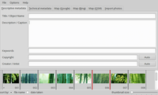
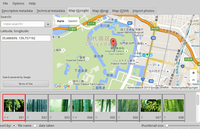
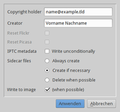

Photini
Dieser Artikel wurde für die folgenden Ubuntu-Versionen getestet:
Ubuntu 16.04 Xenial Xerus
Ubuntu 14.04 Trusty Tahr
Zum Verständnis dieses Artikels sind folgende Seiten hilfreich:
Photini  ist ein Programm, mit dem die Metadaten von digitalen Bildern grafisch bearbeitet werden können. Die enthaltenen Funktionen decken die wichtigsten Metadaten-Felder zur Katalogisierung ab. Für Spezialwünsche kann man bei Bedarf anschließend auf Kommandozeilenwerkzeuge wie z.B. ExifTool ausweichen.
ist ein Programm, mit dem die Metadaten von digitalen Bildern grafisch bearbeitet werden können. Die enthaltenen Funktionen decken die wichtigsten Metadaten-Felder zur Katalogisierung ab. Für Spezialwünsche kann man bei Bedarf anschließend auf Kommandozeilenwerkzeuge wie z.B. ExifTool ausweichen.
Merkmale: 
Bearbeiten von Titel, Beschreibung, Schlagworten, Inhaber der Verwertungsrechte und Fotograf
Geokodierung des Aufnahmeorts
Korrektur von Bilddatum und -Aufnahmezeit (falsche Kamerazeit)
Lesen der Formate Exif, IPTC/IIM und XMP; gleichzeitiges Schreiben aller drei Standards (MWG Tags)
Speichern im Bild oder als XMP "sidecar" Dateien
Setzen der Metadaten für mehrere Bilder gleichzeitig
Direkter Bildimport von zahlreichen Kameras via gphoto2
Unterstützte Bildformate: JPG und RAW-Formate (letztere über Sidecar-Dateien)
Realisiert wurde das Python-Programm auf Basis der Grafikbibliothek Qt. Da deren Version 5 vorausgesetzt wird, ist zur Installation mindestens Ubuntu 14.04 erforderlich. Für die englische Programmoberfläche existieren bisher nur wenige Übersetzungen (siehe auch Problembehebung). Wer bei der deutschen Übersetzung mithelfen möchte, findet auf Transifex weitere Informationen.
Installation¶
 Photini ist nicht in den offiziellen Paketquellen enthalten. Zur Installation muss man auf ein "Personal Package Archiv" (PPA) [1] ausweichen, wenn man das Programm nicht aus dem Quellcode installieren möchte (Python-Programme brauchen nicht kompiliert werden, da dies der Interpreter zur Laufzeit übernimmt).
Photini ist nicht in den offiziellen Paketquellen enthalten. Zur Installation muss man auf ein "Personal Package Archiv" (PPA) [1] ausweichen, wenn man das Programm nicht aus dem Quellcode installieren möchte (Python-Programme brauchen nicht kompiliert werden, da dies der Interpreter zur Laufzeit übernimmt).
PPA¶
Dariusz Duma stellt sein "Personal Package Archiv" (PPA) [1] als Paketquelle zur Verfügung. In diesem PPA sind zahlreiche andere Programme wie RawTherapee oder Luminance HDR enthalten, die sich mit dem Thema (RAW-)Fotografie und Bildbearbeitung unter Linux beschäftigen. Um Problemen mit den offiziellen Paketquellen vorzubeugen, wird empfohlen, das PPA nach der Installation wieder zu deaktivieren oder Apt-Pinning zu nutzen.
Adresszeile zum Hinzufügen des PPAs:
ppa:dhor/myway
Hinweis!
Zusätzliche Fremdquellen können das System gefährden.
Ein PPA unterstützt nicht zwangsläufig alle Ubuntu-Versionen. Weitere Informationen sind der  PPA-Beschreibung des Eigentümers/Teams dhor zu entnehmen.
PPA-Beschreibung des Eigentümers/Teams dhor zu entnehmen.
Damit Pakete aus dem PPA genutzt werden können, müssen die Paketquellen neu eingelesen werden.
Nach dem Aktualisieren der Paketquellen erfolgt die Installation über das folgende Paket [2]:
photini (ppa)
 mit apturl
mit apturl
Paketliste zum Kopieren:
sudo apt-get install photini
sudo aptitude install photini
Fremdpaket¶
Wer davor zurück scheut, wegen eines einzelnes Pakets gleich ein komplettes PPA einzubinden (und anschließend wieder zu entfernen), kann sich auch ein einzelnes Fremdpaket  herunterladen und manuell [3] installieren. Der Paketname lautet: photini_VERSIONdhor~UBUNTUVERSION_ARCHITEKTUR.deb. Nachteilig ist, dass man sich um Programmaktualisierungen in Zukunft selbst kümmern muss.
herunterladen und manuell [3] installieren. Der Paketname lautet: photini_VERSIONdhor~UBUNTUVERSION_ARCHITEKTUR.deb. Nachteilig ist, dass man sich um Programmaktualisierungen in Zukunft selbst kümmern muss.
Hinweis!
Fremdpakete können das System gefährden.
Verwendung¶
Bei Ubuntu-Varianten mit einem Anwendungsmenü erfolgt der Programmstart über "Grafik -> Photini" [4].
Das Programmfenster ist horizontal gegliedert: während sich in der oberen Hälfte die Bearbeitungsfunktion in verschiedenen Reitern (Tabs) befinden, enthält der untere Bereich eine Übersicht der geladenen Bilder. Um mehreren Bildern die gleichen Metadaten zuzuweisen, markiert man diese zuerst über die Auswahlleiste um unteren Fensterrand, bevor man die Metadaten-Felder bearbeitet.
Vorhandene Reiter:
"Descriptive metadata" - Metadaten wie Titel, Beschreibung usw. (IPTC, XMP)
"Technical metadata" - Exif-Daten wie Aufnahmedatum und -zeit, Orientierung, Brennweite, Blende und Linse
"Map Google" - Geokodierung via Google Maps

"Map Bing" - Geokodierung via Bing Karten
"Map OSM" - Geokodierung via OpenStreetMap
"Flickr upload" - in der Linux-Version nicht möglich
"Google Photos upload" (ehemals Picasa) - in der Linux-Version nicht möglich
"Facebook upload" - in der Linux-Version nicht möglich
"Import photos" - Bilder importieren
Metadaten bearbeiten¶
Die beiden ersten Reiter dienen der Bearbeitung der Metadaten. Während Exif-Daten in der Regel nur selten verändert werden – mit Ausnahme von Aufnahmedatum und -zeit, falls die interne Uhr der Kamera nicht korrekt gestellt war – stellen ein Titel, eine Beschreibung und Schlagworte den Kern einer Katalogisierung dar. Insbesondere bei kommerzieller Verwertung durch den Fotografen oder Bildagenturen sind noch zwei weitere Felder wichtig, da Urheber- und Verwertungsrechte nicht zwangsläufig in einer Person vereint sein müssen.
Bei vielen Motiven mag die Unterteilung in Titel und Beschreibung überflüssig erscheinen bzw. ein Titel ausreichen. Sobald aber beispielsweise ein Gruppenfoto katalogisiert werden soll, können die darauf abgebildeten Personen in der Beschreibung genannt werden, während der Titel den Anlass beschreibt.
Schlagworte ermöglichen eine spätere Suche, die über Titel und Beschreibung hinausgeht. Manche Fotografen nutzen hier z.B. eine Farbzuordnung, um Bilder wiederfinden zu können, die nicht das Motiv, sondern die vorherrschende Farbe eines Bilds beschreiben.
Suchfunktionen sind allerdings kein Bestandteil von Photini. Das Programm ist als reiner Metadaten-Editor ausgelegt. Programme mit Suchfunktionen findet man im Artikel Bilder verwalten.
Hinweis:
In vielen Fällen ist auch eine Bewertung des Bildmaterials praktisch. Manche Bildverwaltungen erlauben eine Einteilung von null (keine Bewertung) bis fünf (Spitzenfoto). Ein entsprechendes Feld ist jedoch nur im XMP-Standard vorgesehen und daher in Photini nicht enthalten.
Geokodierung¶
 Photini kann auch eine Geokodierung hinzufügen oder entfernen. Dabei stehen drei verschiedene Karten bzw. Kartenanbieter zur Auswahl. Zuerst lädt man über die Schaltfläche "Load data" eine Karte und positioniert diese über der gewünschten Region. Dabei helfen in die Karte integrierte Schaltflächen zum Vergrößern und Verkleinern weiter. Zur Feinabstimmung kann man anschließend einen in der Karte enthaltenen Ort oder eine Straße suchen. Drag'n'Drop der ausgewählten Bilder in die Karte füllt dann das Feld für Längen- und Breitengrad. Neben dem Dateinamen erscheinen nun zwei Symbole: eine Fahne für Geokoordinaten und ein Blitz für ungesicherte Metadaten. Diese werden über den Menüpunkt "File -> Save Images with new data" gespeichert.
Um Geokoordinaten bei Bedarf wieder zu entfernen, markiert man die gewünschten Bilder und löscht das Feld für Längen- und Breitengrad.
Bilder importieren¶
Obwohl der Bildimport nicht zu den Kernkompetenzen des Programms gehört, hat sich der Entwickler hier interessante Details einfallen lassen. Zum einen können neue Ordner basierend auf den Exif-Daten erstellt werden, zum anderen können über Platzhalter Dateinamen manipuliert werden.
| Platzhalter beim Bildimport | ||
| Platzhalter | Ergebnis | Beispiel |
(name) | Vollständiger Dateiname | IMG_9999.jpg |
(number) | Nur die Nummerierung im Dateinamen | 9999 |
(root) | Dateiname ohne Erweiterung | IMG_9999 |
(ext) | Datei-Erweiterung (Typ) | .jpg |
Beispiele:
Neue Ordner nach Aufnahmedatum erstellen:
/home/BENUTZERNAME/Bilder/%Y/%Y_%m_%d/
ergibt die Ordnerstruktur /home/BENUTZERNAME/Bilder/2016/2016_01_10/ für Bilder, die an diesem Tag gemacht wurden
Dateinamen anpassen:
ANLASS_(number)(ext)
ergibt z.B. 50.Geburtstag_Mama_XXXX.jpg, wobei
XXXXaus der Bildnummerierung der Kamera übernommen wird.
Einstellungen¶
 Die Konfiguration über den Menüpunkt "Optionen -> Einstellungen" beschränkt sich auf nur wenige Möglichkeiten. Allerdings können hier die Standardwerte für zwei wichtige Metadaten-Felder gesetzt werden:
"Copyright" - Inhaber der Verwertungsrechte (Name oder Firmenname)
"Creator" - Fotograf (Name, häufig stattdessen auch die E-Mail-Adresse)
Diese Einstellungen werden automatisch in alle bearbeiteten Bilder übernommen, wenn die die dafür vorgesehene Schaltfläche betätigt. Bevorzugt man Sidecar-Dateien (anstatt die Metadaten direkt ins Bild zu schreiben), kann deren Erstellung aktiviert werden. Diese werden meist für RAW-Dateien verwendet.
Die Konfiguration wird in der Datei ~/.config/photini/editor.ini im Homeverzeichnis gespeichert.
Problembehebung¶
Lokalisierung¶
Um die Programmsprache auf Deutsch umzustellen, lädt man die Datei photini.de.qm herunter und kopiert diese mit Root-Rechten in den Ordner /usr/lib/python2.7/dist-packages/photini/data/lang/ (aufgrund eines Fehlers der Portalsoftware Inyoka muss die Datei noch umbenannt werden):
mv photini.de.obj photini.de.qm sudo mkdir -p /usr/lib/python2.7/dist-packages/photini/data/lang sudo cp photini.de.qm /usr/lib/python2.7/dist-packages/photini/data/lang/
Links¶
Documentation
- HandbuchPhotini - what's in a name?
- Blogbeitrag des Entwicklers, 10/2012
Metadaten
 Übersichtsartikel
Übersichtsartikel
- Erstellt mit Inyoka
-
 2004 – 2017 ubuntuusers.de • Einige Rechte vorbehalten
2004 – 2017 ubuntuusers.de • Einige Rechte vorbehalten
Lizenz • Kontakt • Datenschutz • Impressum • Serverstatus -
Serverhousing gespendet von